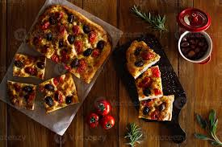

Bruschetta al Pomodoro e Basilico
Focaccia

Mozzarella in Carrozza

A classic and simple appetizer consisting of thick slices of toasted or grilled rustic bread, rubbed with fresh garlic, drizzled with olive oil, and topped with a fresh mixture of diced ripe tomatoes, fresh basil leaves, and a sprinkle of salt.
ksh.1950/=
A dimpled, springy Italian flatbread, often topped with rosemary, sea salt, or tomatoes, and served with olive oil and balsamic vinegar for dipping.
ksh.1720/=

A simple, classic dish of fresh mozzarella that is breaded and fried until golden and melty
ksh.850/=